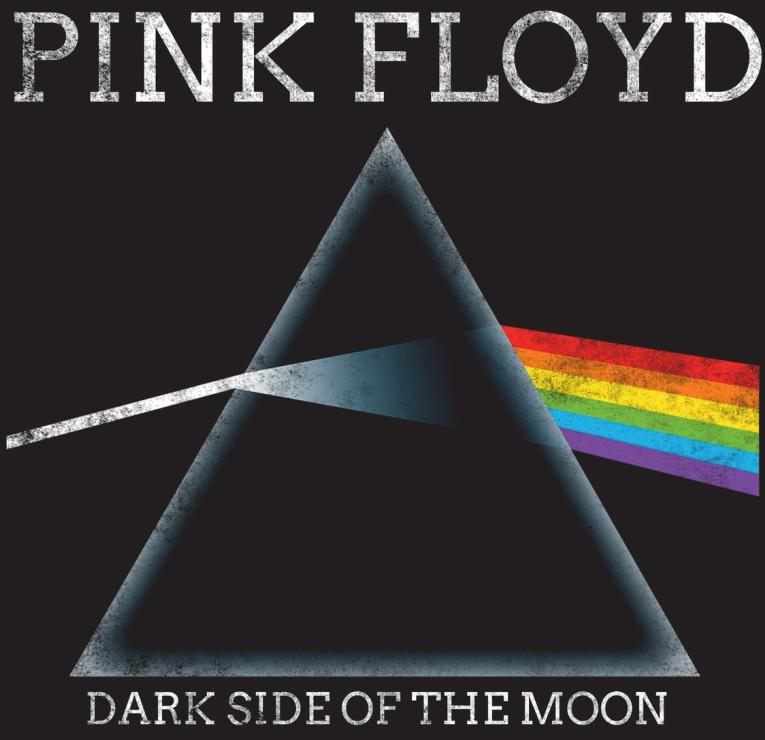
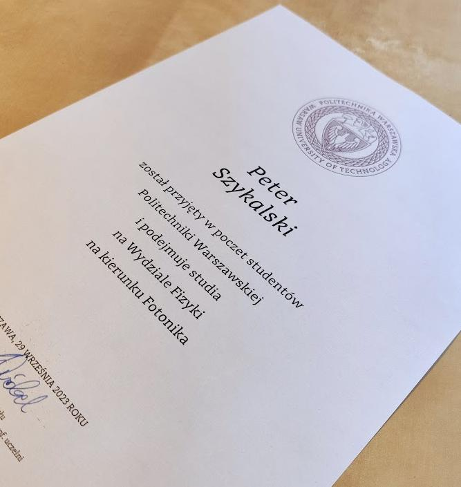
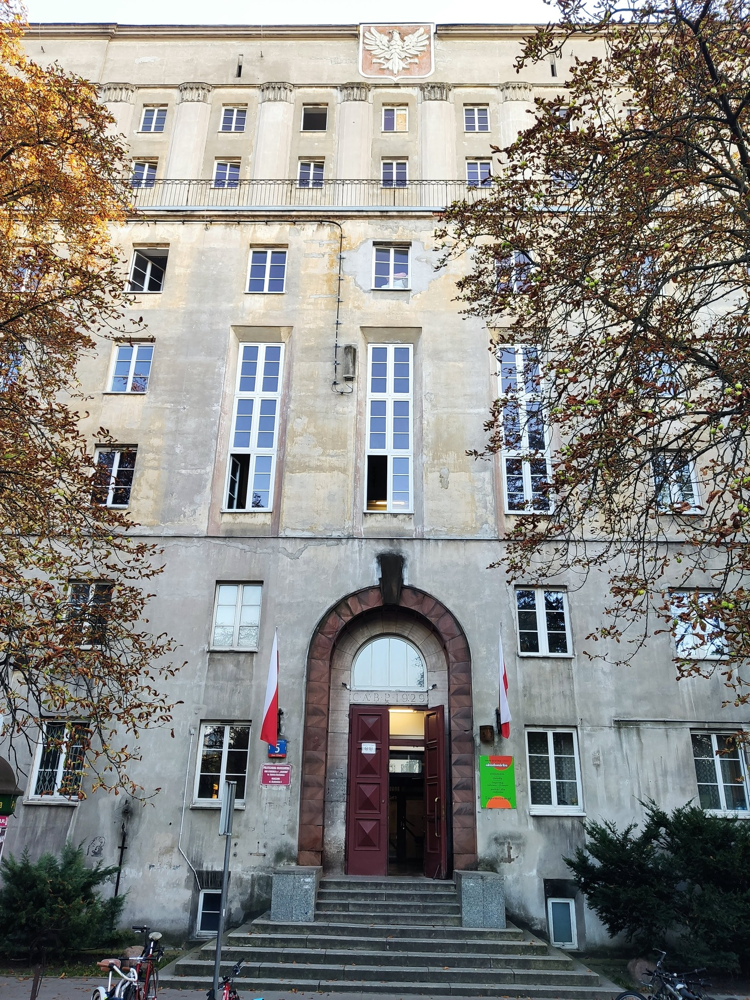

the question WHY?
After HR recruiters asked me why I have a half a year blank spot in my CV I decided to reveal the truth. On the first of October 2023, I started Physics studies faculty Photnics at the Warsaw University of Technology.

My dream was to follow Niels Bohr’s footsteps but really, the power of Photons convinced me. That is also the answer to the WHY question! But being more specific: IMHO the discovery world right now is on the quantum level size where Light with its dual nature plays a key role. The subtle difference between light emitted from a simple lightbulb and a Laser is as mindblowing as the Laser invention story. 50 years after Einstein predicted the creation of such an instrument finally Theodore Maiman did it in 1960. Yeah, that is the power of Applied Physics from theory to practice. It was just the beginning of the silent revolution, the next Big Thing after the transistor was discovered in 1942 by William Shockley with a team. Today it is even hard to imagine the World without the Lasers. Lasers are everywhere. Laser devices cut metal, are used in medicine and most important laser beams can transfer Information. An interesting example of laser usage is the femtosecond laser. Their beam is incredibly fast and powerful hence avoidance of thermal effect is possible, it is crucial when you influence with the beam on a substrate with the expectation of ultra-high precision and micro scale. The light has changed the telecommunications we know today and will be the main driver in this industry for the next fifty years, not only because of Fiber technology but of course because of lasers that right now are introduced in Outerspace communication for example gradually on new batches of Starlink satellites. Without the Optics, we won’t be able to speed up our next-generation processors, particularly AI processors. Some movements towards new technological breakthroughs happen in chip interconnections. An early explorer of this technology is Ayarlabs company showcasing 4 Tbps Optical FPGA Demo.

So those are only a few reasons why I decided to study Photonics. Every kid on this lucky Planet called Earth knows that the Light it is a source of energy for every living plant or creature and is indispensable. Nevertheless, my plan to become the next photonic engineer has finished after half a year. Studies were possible only in full-day mode and I could not find a job that allowed me to share my scientific desire.
Overall conclusions? It’s healthy to leave your comfort zone and try something else.